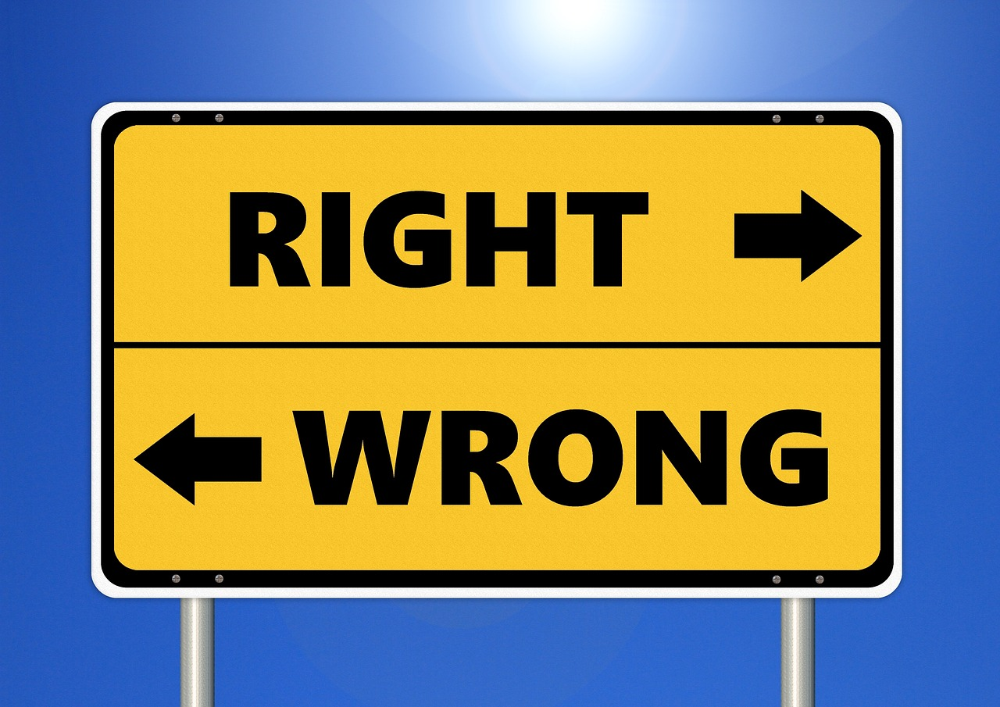

Etika
24 Agustus 2023
Pengertian Etika
sumber : pixabay.com
Menurut bahasa, kata etika berasal dari kata Yunani "ethos" yang memiliki arti "kebiasaan atau adat-istiadat." Etika adalah pedoman tetang berperilaku yang baik dan benar dalam kehidupan bermasyarakat baik bagi satu individu maupun kelompok.
Etika merupakan hal yang patut diperhatikan oleh setiap individu dalam kehidupan bermasyarakat agar tingkah laku seseorang tidak merugikan individu yang lain sehingga tercipta lingkungan yang harmonis.
Pengertian Etika menurut Ahli
- George Reynolds
- W. J. S. Poerwadarminta
- K. Bertenss
- H. A. Mustafa
"etika adalah seperangkat keyakinan tentang perilaku benar dan salah dalam suatu masyarakat"
"etika merupakan ilmu pengetahuan terkait perbuatan dan sikap insan dipandang dari sisi baik dan sisi buruknya yang ditentukan oleh manusia pula."
"Etika adalah nilai-nila dan norma-norma moral, yang menjadi pegangan bagi seseorang atau suatu kelompok dalam mengatur perilaku."
"ilmu yang menyelidiki, yang baik dan yang buruk untuk mengamati tindakan manusia sejauh bisa diketahui oleh pikiran."
Pengertian Etika menurut KBBI
ilmu tentang apa yang baik dan apa yang buruk dan tentang hak dan kewajiban moral (akhlak)
Pengertian Moral
Moral adalah prinsip-prinsip atau ketentuan tentang tata cara berperilaku yang membentuk karakter dalam pribadi seseorang, sehingga timbul rasa saling menghormati antar sesama dalam kehidupan bermasyarakat.
Pengertian Hukum
Hukum adalah peraturan yang ditegakkan melalui lembaga sosial atau pemertintahan yang apabila dilanggar akan dikenai tindakan atau sanksi, hukum merupakan alat untuk melindungi dan mengatur kehidupan masyarakat.
sumber : freepik.com
dalam KBBI (Kamus Besar Bahasa Indonesia) pengertian hukum adalah peraturan atau adat yang secara resmi dianggap mengikat, yang dikukuhkan oleh penguasa atau pemerintah.
Perbedaan Etika dan Etiket
- Etika tidak membatasi seseorang pada bagaimana suatu tindakan harus dilakukan sedangkan etiket merupakan cara bagaimana tindakan harus dilakukan, biasanya ditentukan oleh masyarakat atau budaya.
- Etiket hanya berlaku ketika seseorang sedang tidak sendirian atau sedang bersama dengan orang lain, seperti halnya dalam pergaulan sedangkan etika berlaku ketika seseorang sedang sendirian maupun bersama dengan orang lain atau dalam pergaulan.
Pengertian Profesi
Profesi adalah suatu pekerjaan yang memerlukan keahlian dalam bidangnya, istilah profesi sering digunakan untuk menyebutkan pekerjaan seseorang orang yang memiliki keahlian tertentu disebut profesional.
Ciri-ciri Profesi :
- Adanya pengetahuan dan keahlian khusus sesuai dengan bidang profesinya.
- Adanya lisensi untuk menjalakan profesi sesuai dengan bidangnya.
- mengutamakan kepentingan bersama
- memiliki kode etik
Pengertian Etika Profesi
Etika profesi merupakan pedoman, norma, atau tata cara dalam bertingkah laku dalam dunia kerja. Etika profesi adalah sikap hidup yang bertujuan untuk memberikan pelayanan yang baik pada orang lain secara profesional. Etika profesi mempunyai peran sebagai pedoman tentang sesuatu yang baik dan benar dalam dunia kerja agar dapat memberikan pengalaman yang baik.
Prinsip Etika Profesi
- Tanggung Jawab
- Keadilan
- Otonomi
- Integritas Moral
Prinsip yang paling utama adalah rasa tanggung jawab yang harus dimiliki oleh setiap pelaku profesi ,seorang pelaku profesi harus bertanggung jawab terhadap apa yang ia kerjakan dan hasil dari apa yang dikerjakan.
Prinsip keadilan akan menghindarkan seseorang dari melakukan diskriminasi terhadap pihak tertentu.
Setiap pelaku profesi memiliki wewenang dan kebebasan bekerja sesuai dengan profesinya. Dengan demikian, seseorang memiliki hak untuk melakukan atau tidak melakukan sesuatu sesuai dengan etika profesinya.
Setiap pelaku profesi wajib memiliki moral dan kejujuran secara konsisten dalam menjalankan pekerjaanya. Pelaku profesi harus selalu bersikap adil dan mengedepankan kepentingan berssama.
Pengertian Kode Etik Profesi
Kode etik profesi adalah prinsip moral, etika, dan norma yang mengatur perilaku baik dan buruk dari anggota suatu profesi dalam menjalankan tugas-tugas mereka, kode etik bertujuan agar anggota profesi bertindak dengan integritas, kejujuran, dan tanggung jawab dalam menjalalankan tugasnya.
Fungsi Kode Etik :
- Kode etik profesi sebagai pedoman bagi anggota profesi dalam berperilaku di dunia kerja.
- Kode etik profesi merupakan kontrol bagi anggota profesi agar senantiasa menjaga tingkah laku dalam berprofesi.
- Kode etik berperan dalam meningkatkan layanan dan kualitas profesional.
- Kode etik profesi sebagai pertanggung jawaban oleh setiap anggotaa profesi.
My Profile

Nama : Mukhamad Alyasyi Thobiq
NIM : 232410102074
Fakultas : Ilmu Komputer
Prodi : Teknologi Informasi